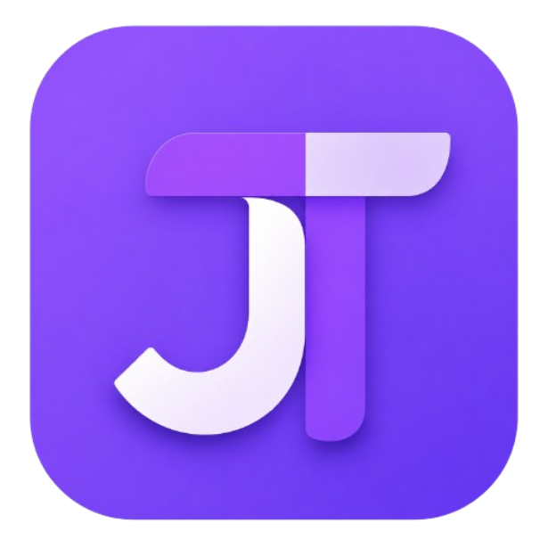
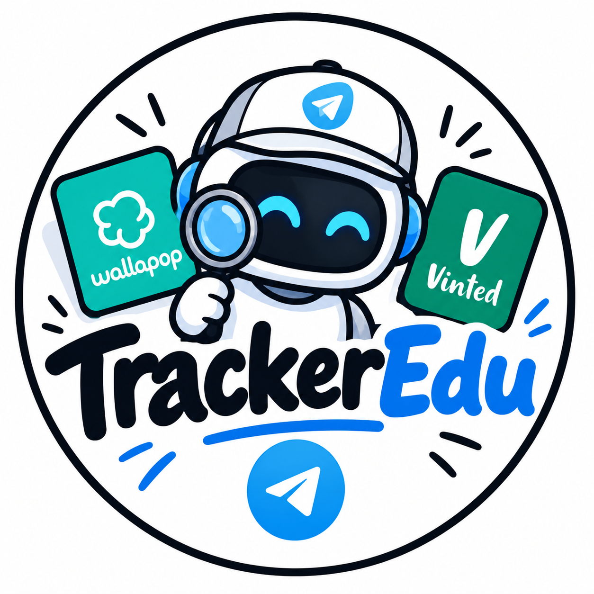
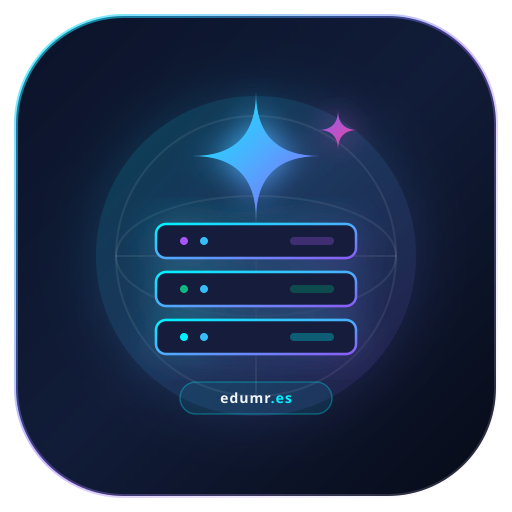
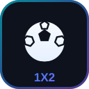

Hola, soy Edu MR
Construyo aplicaciones, automatizaciones y proyectos digitales de principio a fin, apoyándome en los modelos de IA más avanzados del momento. Todo con infraestructura propia, máxima velocidad y un diseño cuidado hasta el último detalle.
Edu MR
Creator & Builder
Creando proyectos útiles con tecnología real
Transformo ideas en productos digitales reales: aplicaciones móviles, sistemas de automatización e inteligencia artificial aplicada a problemas del día a día.
No me quedo en la teoría: configuro mis propios servidores VPS, desarrollo mis herramientas de principio a fin y elijo siempre la tecnología que ofrece el máximo control, velocidad y rendimiento.
Infraestructura propia con VPS y control total.
Desarrollo ágil potenciado por Claude Sonnet 4.6.
Bots y scripts que trabajan solos 24/7.
Áreas de trabajo
Las disciplinas en las que centro mis desarrollos e investigaciones.
Desarrollo Mobile & IA
Creación de aplicaciones nativas en Android combinando interfaces fluidas con inteligencia artificial para asistencia personalizada y automatizaciones complejas.
Bots & Automatización
Monitores de mercado en tiempo real, rastreo continuo de anuncios en plataformas de segunda mano, análisis de precios y alertas instantáneas a Telegram.
Servidores VPS & Cloud
Despliegue de sistemas en servidores privados virtuales propios, configuración de DNS, certificados SSL de alta seguridad y gestión de dominios sin intermediarios.
Desarrollos Propios
Soluciones creadas y puestas en producción.

JassTrack
Control inteligente de medicación y pastillas con aviso al cuidador
Aplicación Android desarrollada conjuntamente con Claude Sonnet 4.6 pensada para el seguimiento riguroso de tomas médicas. Envía una alerta inmediata a la persona cuidadora en el momento exacto en que se realiza la toma. Cuenta con control automático de stock de pastillas, asistente con IA personal, calendario de dosis y una notificación semanal de seguimiento con el balance de cumplimiento.

TrackerEdu
Bot de alertas Telegram para Vinted y Wallapop
Desarrollado con DeepSeek V4. Bot de Telegram para la detección y notificación inmediata de oportunidades en plataformas de compraventa. Incorpora monitorización constante de artículos, control y evolución de precios para detectar gangas, e integración de traducción en directo para artículos internacionales sin fricción.

Web Oficial Edu MR
VPS propio y dominio configurado a medida
Desarrollada y estructurada con Gemini 3.8 y desplegada sobre un servidor privado virtual (VPS) con gestión directa del dominio edumr.es. Configuración avanzada de zonas DNS, capa de seguridad SSL/TLS para navegación cifrada y diseño con máxima optimización de velocidad de carga.

La Porra LaLiga
Quiniela semanal entre compañeros con puntuación automática
Porra semanal de LaLiga (1X2) para jugar con los compañeros. Carga automáticamente los 10 partidos de la jornada desde la API oficial, con escudos de los equipos y horarios reales. Cada jugador entra con su apodo y vota 1, X o 2. El sistema bloquea las apuestas al empezar el primer partido, calcula los aciertos solo y ordena la clasificación al instante.